Crear Orden de Compra desde Líneas de la Requisición
Para ejecutar el procedimiento de manera correcta, debe existir obligatoriamente un registro de requisición en estado “Completo. En este caso, se tiene como ejemplo la requisición “RCN-4”.
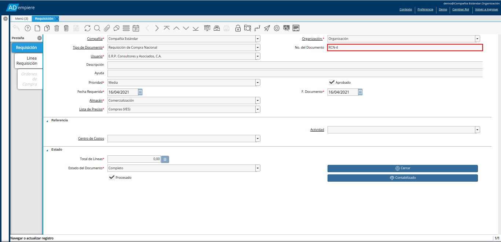
Imagen 1. Requisición
Dicha requisición contiene cuatro (4) líneas.
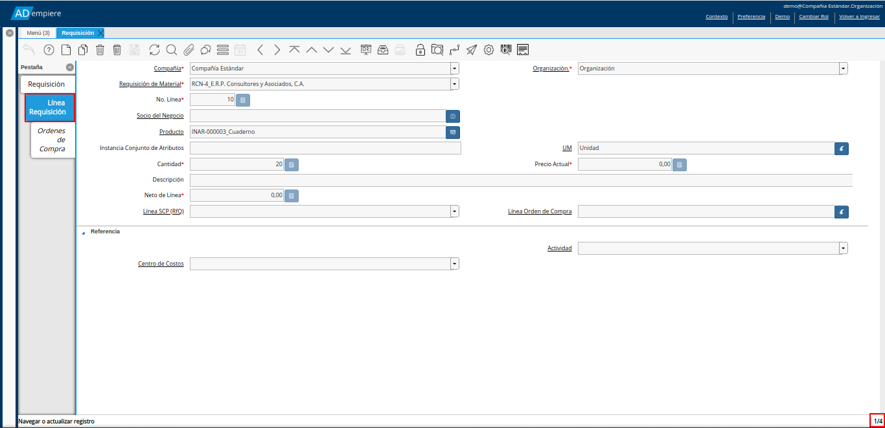
Imagen 2. Pestaña Línea Requisición
Ubique y seleccione en el menú de ADempiere, la carpeta “Gestión de Compras”, luego seleccione el proceso “Crear Orden de Compra desde líneas de la Requisición”.
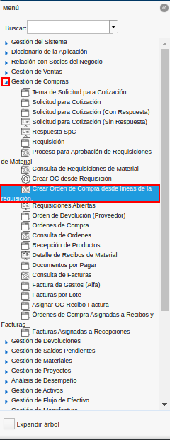
Imagen 3. Menú de ADempiere
Podrá visualizar la ventana del proceso “Crear Orden de Compra desde líneas de la Requisición”, con diferentes campos que le permite al usuario filtrar la información en base a lo requerido para generar la orden de compra con las líneas seleccionadas de dicha requisición.
Imagen 4. Ventana del Proceso Crear Orden de Compra desde Líneas de Requisición
Introduzca en el campo “No. del Documento”, el número de documento de la requisición por la cual requiere filtrar la información.
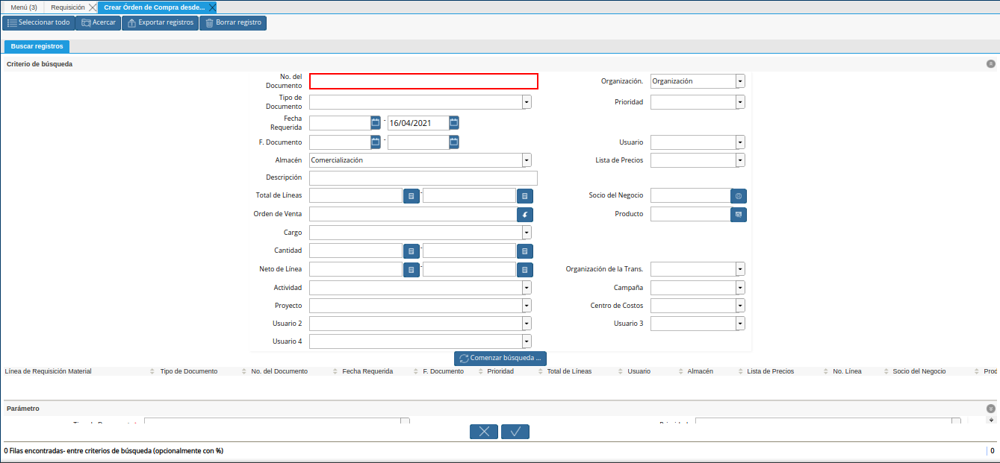
Imagen 5. Campo No. del Documento
Seleccione en el campo “Organización”, la organización para la fue realizada la requisición.
Imagen 6. Campo Organización
Seleccione en el campo “Tipo de Documento”, el tipo de documento con el cual fue generada la requisición.
Imagen 7. Campo Tipo de Documento
Seleccione en el campo “Prioridad”, la prioridad con la cual fue generada la requisición.
Imagen 8. Campo Prioridad
Seleccione en el campo “Fecha Requerida”, la fecha en la que fueron requeridos los productos cargados a las líneas de la requisición.
Imagen 9. Campo Fecha Requerida
Seleccione en el campo “F. Documento”, la fecha en la que fue generado el documento de requisición.
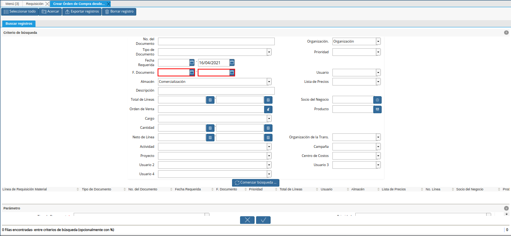
Imagen 10. Campo F. Documento
Seleccione en el campo “Usuario”, el usuario que genero el documento de requisición.
Imagen 11. Campo Usuario
Seleccione en el campo “Almacén”, el almacén utilizado para generar la requisición.
Imagen 12. Campo Almacén
Seleccione en el campo “Lista de Precios”, la lista de precios utilizada para generar la requisición.
Imagen 13. Campo Lista de Precios
Introduzca en el campo “Descripción”, la descripción ingresada en la requisición.
Imagen 14. Campo Descripción
Introduzca en el campo “Total de Líneas”, el total de las líneas de la requisición.
Imagen 15. Campo Total de Líneas
Seleccione en el campo “Socio del Negocio”, el socio del negocio seleccionado en las líneas de la requisición.
Imagen 16. Campo Socio del Negocio
Seleccione en el campo “Orden de Venta”, la orden de venta relacionada a la requisición.
Imagen 17. Campo Orden de Venta
Seleccione en el campo “Producto”, el producto seleccionado en las líneas de la requisición.
Imagen 18. Campo Producto
Seleccione en el campo “Cargo”, el cargo relacionado a la requisición.
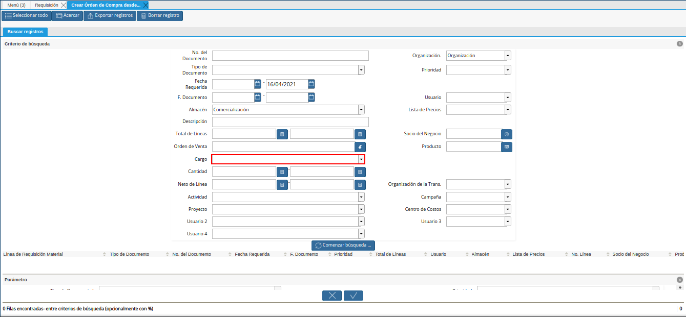
Imagen 19. Campo Cargo
Introduzca en el campo “Cantidad”, la cantidad del producto ingresada en las líneas de la requisición.
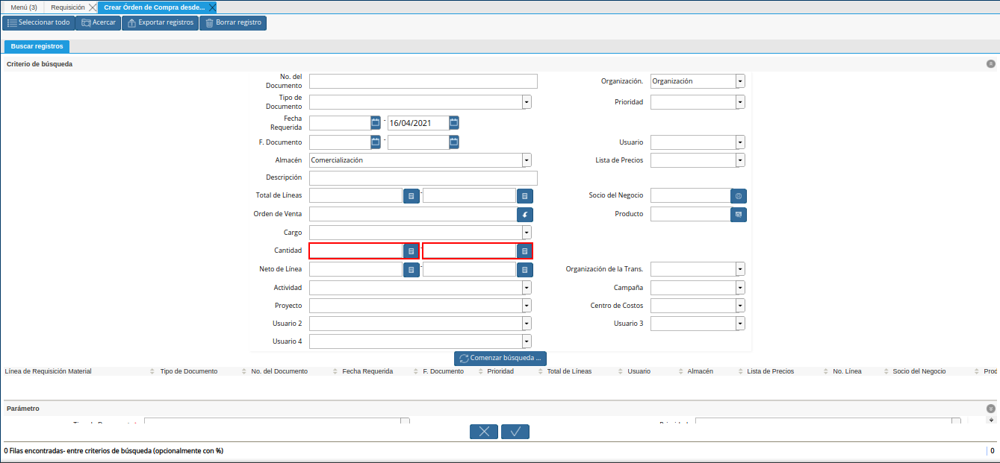
Imagen 20. Campo Cantidad
Introduzca en el campo “Neto de Línea”, el neto de la línea de la requisición.
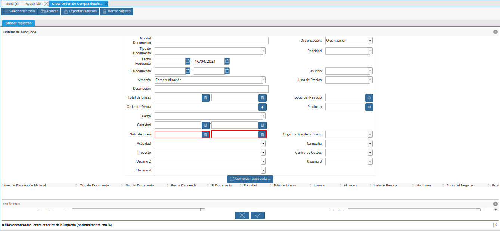
Imagen 21. Campo Neto de Línea
Seleccione en el campo “Organización de la Transacción”, la organización de la transacción de la requisición.
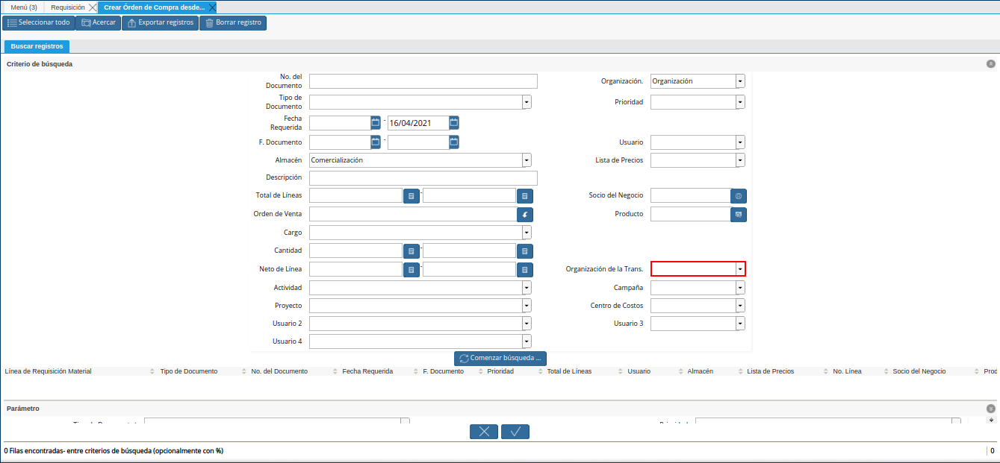
Imagen 22. Campo Organización de la Trans.
Seleccione en el campo “Actividad”, la actividad por la cual requiere filtrar la información.
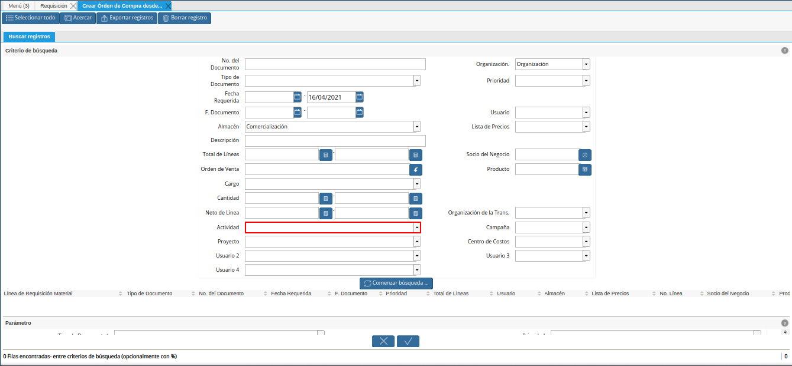
Imagen 23. Campo Actividad
Seleccione en el campo “Campaña”, la campaña por la cual requiere filtrar la información.
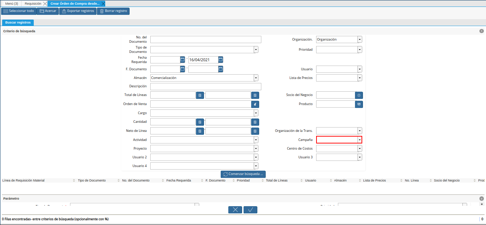
Imagen 24. Campo Campaña
Seleccione en el campo “Proyecto”, el proyecto por el cual requiere filtrar la información.
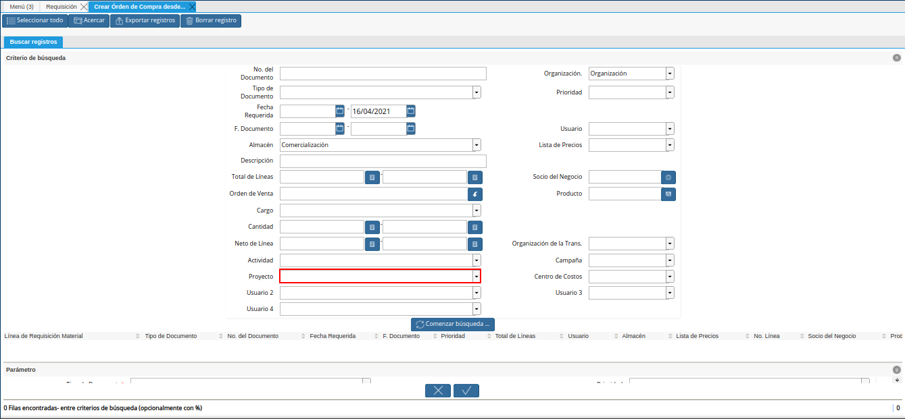
Imagen 25. Campo Proyecto
Seleccione en el campo “Centro de Costos”, el centro de costos por el cual requiere filtrar la información.
Imagen 26. Campo Centro de Costos
Seleccione en el campo “Usuario 2”, el usuario dos (2) por el cual requiere filtrar la información.
Imagen 27. Campo Usuario 2
Seleccione en el campo “Usuario e”, el usuario tres (3) por el cual requiere filtrar la información.
Imagen 28. Campo Usuario 3
Seleccione en el campo “Usuario 4”, el usuario cuatro (4) por el cual requiere filtrar la información.
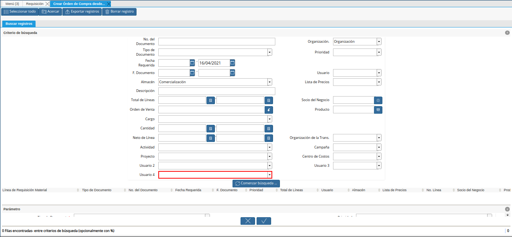
Imagen 29. Campo Usuario 4

Seleccione la opción “Comenzar Búsqueda”, para filtrar la información en base a lo seleccionado en los campos nombrados anteriormente.
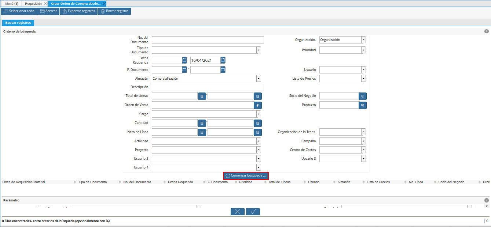
Imagen 30. Opción Comenzar Búsqueda
Podrá visualizar los resultados de la búsqueda, donde se refleja la información ingresada en las líneas de la requisición.
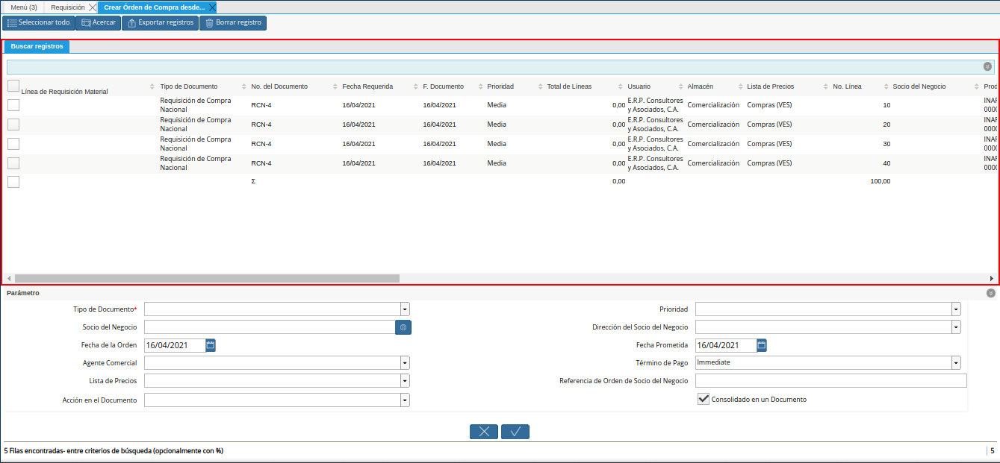
Imagen 31. Resultados de Búsqueda
Seleccione las líneas de la requisición para crear la orden de compra desde las mismas.
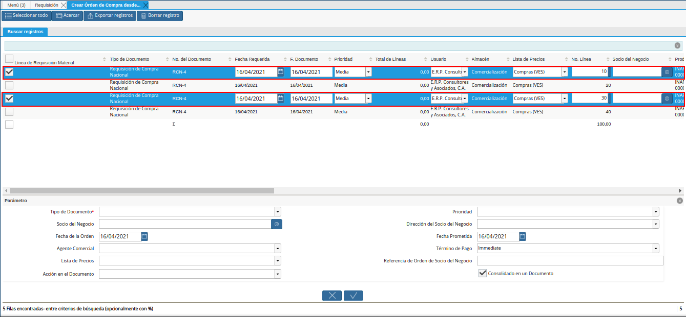
Imagen 32. Seleccione de Líneas de Requisición
Note
Al seleccionar cualquiera de los registros, se habilitan diferentes campos que le permiten al usuario ingresar o modificar los valores en los mismos.
Seleccione en el campo “Tipo de Documento”, el tipo de documento con el cual será generado el documento “Orden de Compra”.
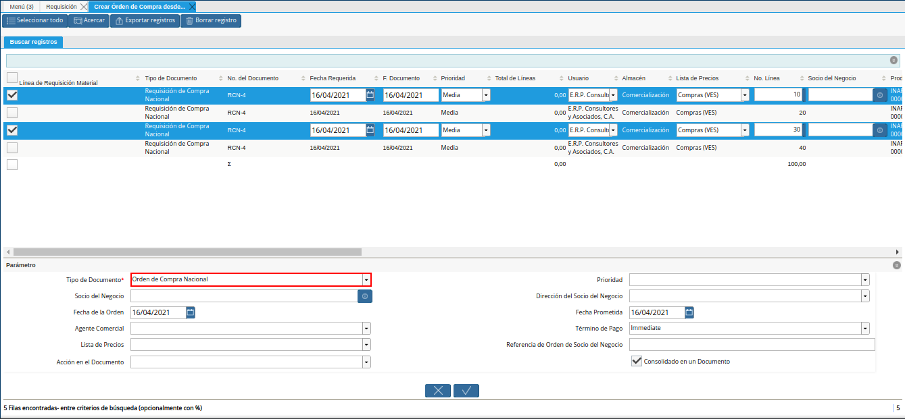
Imagen 33. Campo Tipo de Documento
Seleccione en el campo “Prioridad”, la prioridad con la cual será generado el documento “Orden de Compra”.
Imagen 34. Campo Prioridad
Seleccione en el campo “Socio del Negocio”, el socio del negocio con el cual será generada la orden.
Imagen 35. Campo Socio del Negocio
Seleccione en el campo “Dirección del Socio del Negocio”, la dirección del socio del negocio seleccionado para la orden.
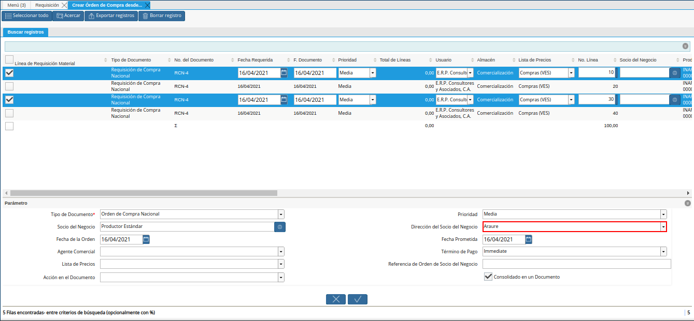
Imagen 36. Campo Dirección del Socio del Negocio
Seleccione en el campo “Fecha de la Orden”, la fecha de la orden con la cual será generada la orden.
Imagen 37. Campo Fecha de la Orden
Seleccione en el campo “Fecha Prometida”, la fecha prometida con la cual será generada la orden.
Imagen 38. Campo Fecha Prometida
Seleccione en el campo “Agente Comercial”, el agente comercial con el cual será generada la orden.
Imagen 39. Campo Agente Comercial

Seleccione en el campo “Termino de Pago”, el termino de pago con el cual será generado el documento “Orden de Compra”.
Imagen 40. Campo Termino de Pago
Seleccione en el campo “Lista de Precios”, la lista de precios con la cual será generada la orden.
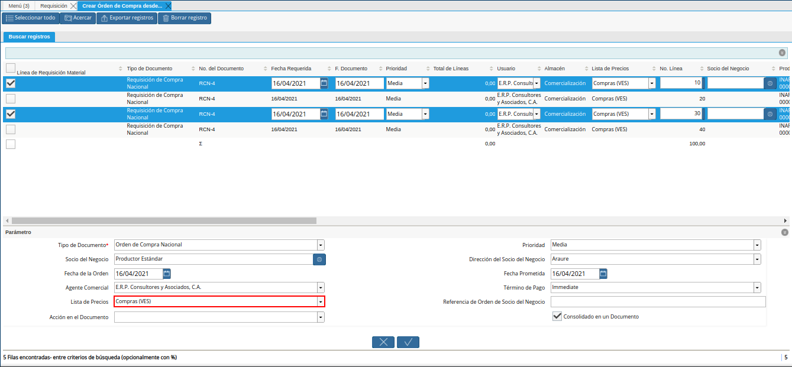
Imagen 41. Campo Lista de Precios
Introduzca en el campo “Referencia de Orden de Socio del Negocio”, la referencia de orden de socio del negocio.
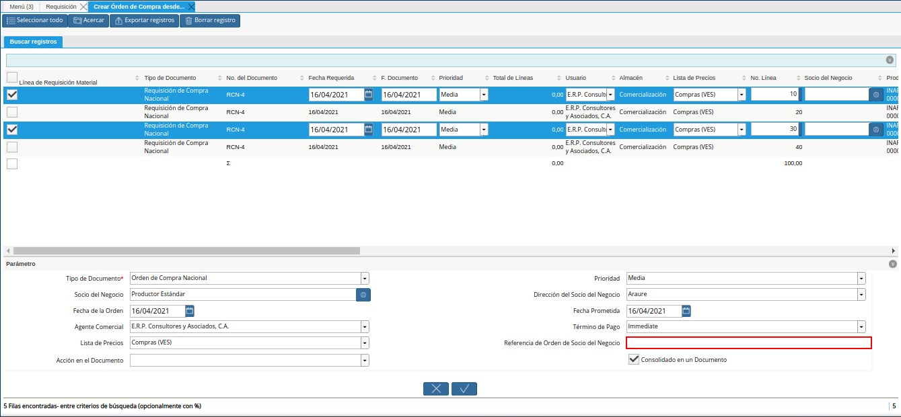
Imagen 42. Campo Referencia de Orden de Socio del Negocio
Seleccione en el campo “Acción del Documento”, la acción de documento con la cual será generado al documento “Orden de Compra”.
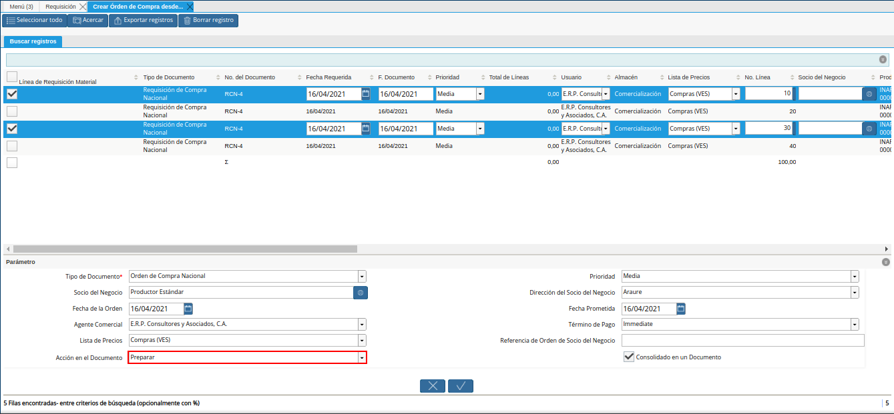
Imagen 43. Campo Acción del Documento
Seleccione la opción “OK”, para generar el documento “Orden de Compra” en base a lo seleccionado en los campos nombrados anteriormente.
Imagen 44. Opción OK
Al ubicar en la ventana “Órdenes de Compra”, el registro de la orden de compra creado, podrá visualizar que el mismo fue generado en estado “Borrador”.
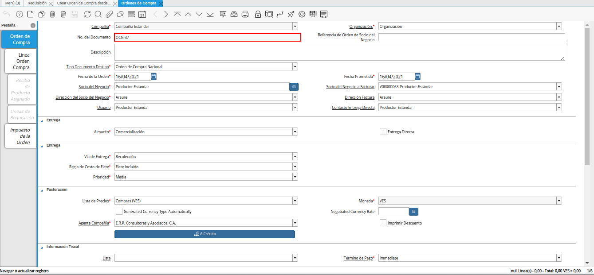
Imagen 45. Registro de Orden de Compra
Seleccione la pestaña “Línea Orden Compra”, de la ventana “Órdenes de Compra”.
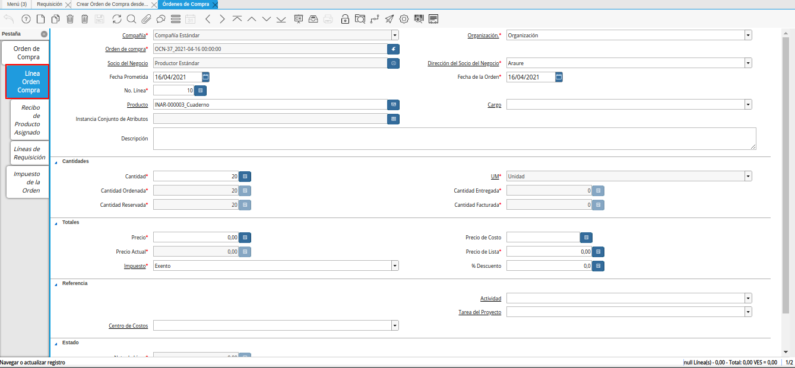
Imagen 46. Pestaña Línea de Orden
Introduzca en el campo “Precio”, el precio del producto correspondiente al registro de la línea en la que se encuentra.
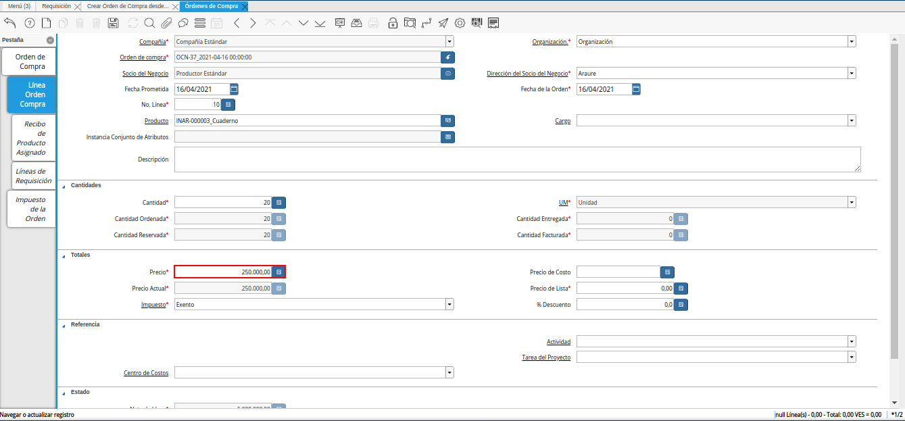
Imagen 47. Campo Precio
Note
Recuerde guardar el registro de los campos en pestaña “Línea Orden Compra”
Seleccione la pestaña principal “Orden de Compra” para proceder a completar el registro.
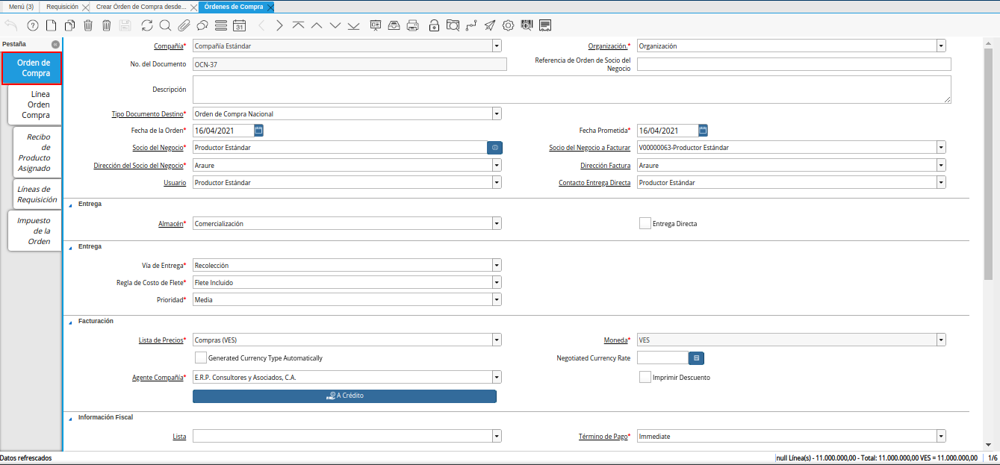
Imagen 48. Pestaña Orden de Compra
Seleccione la opción “Preparar”, ubicado en la parte inferior de la ventana “Órdenes de Compra”.
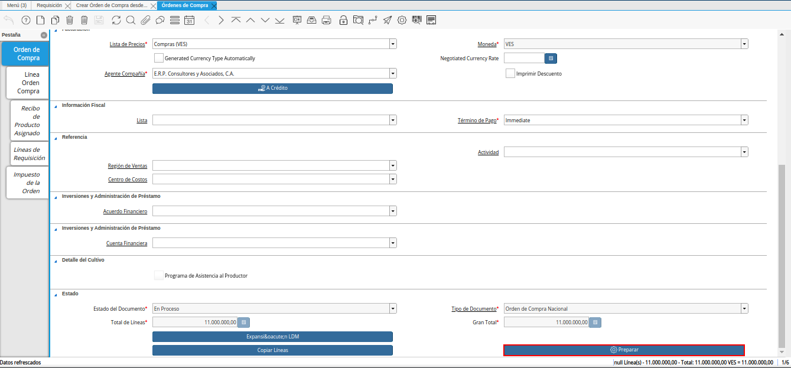
Imagen 49. Opción Preparar
Seleccione la acción “Completar” y la opción “OK”, para completar el proceso.
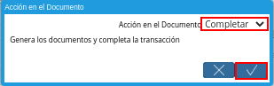
Imagen 50. Acción Completar y Opción OK